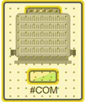
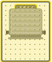

Graphics Viewer Troubleshooting
This table provides troubleshooting information about the Graphics Viewer.
Issue | Possible solutions… |
#COM (Communication Error)  #Com with text  #COM no text NOTE: Symbol may look different. For example, no text element or background overlay, depending on how it was engineered. | The data point is resolved, but not communicating with the device. The element is not visible but values for the element display in the contextual pane. - Reconfigure the driver
- Service the device in case of malfunction
- Reconnect the device
- Verify device wired properly
- To fix references and data point names in graphic files: run the Consistency Checker tool:
-Task: Check for Data Point Name and Object Reference in *CCG Files.
- If needed, use Find and Replace to fix references.
TIP: To reduce time, set the Path to a specific folder that contains the Symbols, and remove any other paths.
|
#REF (Symbol Reference Error) 
| Symbol cannot be located. - Check file shares and permissions
- Confirm if Symbols still exist (not deleted)
- Confirm Symbol(s) converted to SVG, or
- To convert the Symbol to .SVG, in the management station, run the Consistency Checker tool:
- Task: File Conversion
- Conversion Method: ToSvg
- Path Symbols: libraries\*ccs
- Force Conversion: True
TIP: To reduce time, set the Path to a specific folder that contains the Symbols, and remove any other paths.
|